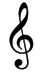
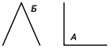
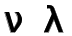

Беседа 3482 от 3877 · Беинса Дуно
Две врати за освобождение
„Добрата молитва“
„Мислѝ, право мислѝ“
(Направихме упражнението за дишането: ръцете нагоре – поемане, ръцете с допрени пръсти над главата – задържане, сваляне на ръцете – издишане.
Двете ръце настрани с допрени пръсти надясно. Лявата ръка се движи по дясната и се поставя настрани. Дясната пред лявата с допрени пръсти. Дясната ръка се движи по лявата и се поставя настрани.)
Кое зависи от нас и кое не зависи от нас? Хората се тревожат за неща, които не зависят от нас. Изгревът на Слънцето не зависи от нас – то изгрява когато си иска и залязва когато си иска. Когато времето се разваля, и това не зависи от нас. Че се разваля, разваля се, не зависи от нас. Когато вятърът духа, не зависи от нас. Духа си, когато иска меко, когато иска, духа силно – не зависи от нас. Водата тече, когато си иска и това не зависи от нас. Пък има работи, които зависят от нас. Да ядем, от нас зависи; кога да ядем, от нас зависи. От нас зависи кога да си отваряме очите, от нас зависи да си отваряме ушите, от нас зависи да си мърдаме краката, от нас зависи да си мърдаме ръцете, от нас зависи да си мърдаме езика. От нас зависи да мислим, от нас зависи да чувствуваме, от нас зависи да постъпваме добре.
Казвам: Не се тревожете за туй, което не зависи от вас. Да се раждате, да умирате, не зависи от вас. Ще умреш – не зависи от тебе. Като се раждаш, то не е твоя работа. Като умираш, пак не е твоя работа. Защо ще се тревожиш какво ще стане с тебе? Каквото е станало, като си се родил, такова ще стане и като умреш. Като се роди, стана ли нещо? Родил си се, дошъл си, намерил си баща си, майка си, братята, сестрите си. Като умреш, пак ще намериш братята и сестрите си на друго място.

Та, казвам: Вие сега искате да бъдете горе, да бъдете в оня свят. Вие искате да знаете какво сте били в миналото. Каквото сте били в миналото, то не е ваша работа. То е било. Какво ще бъдете за в бъдеще, и това не е ваша работа. Какво ще бъдете сега, то е ваша работа. Вие сега се занимавате какво ли сте били в миналото. Не е ваша работа това. Какво ще бъдете за бъдеще, и то не е ваша работа. Какво ще бъдете сега, това зависи от вас. Казвам: Сега ще говорим за туй, което зависи от вас. Сега някои пишете – то зависи от вас. Някои пишат, някои не пишат. Които пишат, какво добиват и които не пишат, какво добиват? Тези, които пишат, работят, които не пишат, си почиват. Пък следния път тия, които пишат, ще си почиват, а другите ще работят. Предполагам, тези, които си почиват сега, са работили, а които сега работят, са си почивали.
Вие по някой път се запитвате: „Аз, малкият човек, какво зависи от мене?“ Много работи зависят от вас в дадения случай. Ти седиш като стражар на пътя и минава някой, не знае пътя. Ти може да го упътиш. Не целия свят да упътиш в този път, но този човек, който минава, него да упътиш. Тебе ти минава една хубава мисъл: кой път да хвана? Ти ѝ кажеш: „Аз не зная, много пътища може да хванеш.“ На правата мисъл кажи ѝ: „Този е пътят!“ Понеже тя иде отдалече, от далечно място, странник е, непознат с този свят, кажи ѝ: „Този е правият път!“ Покажи на тази мисъл най-близкия път. Минава едно чувство. Чувството, и то е едно същество, което иде отдалече. То пита: „Кой път да хвана?“ Кажи и на него.
Вие сега мислите, че мислите са ваша собственост и чувствата са ваша собственост. Отчасти е вярно. Една мисъл ще ти остави подарък – то е ваше, но самата мисъл не е ваша. Едно чувство ще ви остави подаръци, но вие мислите, че подаръците са самото чувство. Чувствата, те вървят. Остави ти подаръците и отива при милиони същества и все оставя своите подаръци. Туй, което не е ваше, по някой път е по-важно от това, което е ваше. Дошъл въздухът – той слиза в дробовете и той ще ви принесе много по-голяма полза, отколкото въздуха, който мислиш, че е станал твой. Твоят въздух трябва да го изпратиш вън, да учи. Защото, ако го задържиш, след време ще ти причини вреда. Като седи 10–15 секунди, става кисел. Въздухът, като влиза във вас, е кротък и смирен, но след като седи във вас и седи 15 секунди, става като вас – вкисва се и непременно трябва да го изпратиш навън. Затуй хората вдишват. Показва колко са добри. Колкото по-бърже дишаш, толкоз си по-сприхав; колкото по-полека дишаш, толкоз си по-кротък.
Сега искате да знаете колко сте кротки. Никой от вас не е кротък. Някой за 10 секунди, някой за 15, за 20, 25, 30, 35, 40, 45, 50, 55, 60 – като дойдете до 60 секунди, вече се задъхвате. Някой казва: „Колко е търпелив!“ Казвам: 5 секунди. Като влезе вкъщи, повече от 5 секунди не стои, на 10 секунди – навън. Понеже светлината знае този закон, понеже е много просветена, че тя при хората остава само една 300-хилядна от секундата, за да не се развали приятелството. Като дойде, казва: „Добър ден!“ и си замине. Човек още спи. След една секунда, като се събуди, казва: „Кой дойде? Кой беше?“ Казва: „Чух нещо на грамофона, записано е „Добър ден“, аз съм спал.“ Той като стане, след една секунда тя е вече на 300 000 километра далеч. Казвате по телефона да се спре, тя не се спира. Чуете тогава: „Добър ден, тука ли сте?“ Някой път не спите. Като станете сутрин, таман сте станали, не сте готови за светлината. Обърнали сте очите на хляба или на нещо друго, или сте отворили една книга и четете. Когато иде самата светлина, не я приемаш. Ти докато дигнеш очите си, след 1–2 секунди светлината я няма.
Та, казвам: Трябва да бъде съзнанието ви будно. Та сега вие всички страдате. Да ви кажа защо. Една от причините е: понеже всякога, когато иде светлината, вие спите, затуй страдате. Всякога, когато си буден, ще поздравиш светлината. Когато се зарадваш, то е посрещане на светлината. Само глашатаите, които са дошли (глашатаите са сенките, тъмнината), те казват: „Ние си заминаваме, иде светлината.“ И вие се зарадвате. Щом дойде светлината, отвлича се вашето внимание с външни предмети. Това видите, онова видите, докато те погледне. Изисква се много будно съзнание. В една секунда какво ще направите? В една 300-хилядна от секундата какво може да направиш? Туй време е непонятно за хората. Казвам: една 300-хилядна от секундата е един километър разстояние. Човек няма понятие какво е за една секунда да измине 300 000 километра, колкото оттук до Месечината.
Сега вие се спирате и казвате: „Що ни трябва да се занимаваме колко пътува светлината? Не ни трябва.“ Съгласен съм, че не ви трябва. Казвам ви: Защо ви трябва да се тревожите, кажете ми? Какво ще спечелите, като се тревожите? Съгласен съм, като питате какво ще се ползувате от знанието колко пътува светлината. Но питам: Като се тревожиш, какво ще добиеш? Седиш и мислиш: „Ще умра“ и започнеш да се тревожиш. Като се тревожиш, какво ще добиеш? Ще пожълтее лицето ти, очите ти ще започнат да примижат, краката ти ще започнат да се откъсват, ще изгубиш желание за живот, не ти се яде, хората ти станат неприятни, понеже се готвиш да идеш за другия свят. Вие придобивате положението на младите моми. Знаете какво е положението на младите моми, момите, които са тук, на Земята? На тях замязате. Младото момиче прегръща баща си, майка си, радва се, целува ги. Дойде едно време и то започне да мисли, че ще умре. Синът мисли, че ще умре и дъщерята мисли, че ще умре. Не целува майка си, погледнеш: плаче. Погледнеш: започнат да идват писма от оня свят. Днес дойде едно писмо от оня свят, казва: „Да приготвите дъщеря си!“, утре дойде едно писмо: „Да приготвите сина си!“ Синът плаче и дъщерята плаче. Я ми разгадайте какво значи? Тя видяла един от оня свят, който не е от техния свят, от оня свят иде. Казва, че вече не ѝ се живее, при баща ѝ, при майка ѝ, не струват. Видяла от оня свят ангел, облечен, спретнат, с хубави дрехи, с хубава шапка, с хубави обуща, яка, която е копринена, усмихнат като ангел, говори сладки думи. Аз съм копирал писма от оня свят, толкоз ми харесват, оригинални има. Но същественото за вас остава, понеже все ще дойдат от оня свят да ви повикат, ще дойдат, ще влязат вкъщи, ще ви повикат да излезете. Всеки, който влиза вкъщи, трябва да знае да излезе из къщи.
Та, казвам: Този е процесът, по който започва мисълта. Казваме: вътрешен свят и външен свят. Ако разбираме вътрешния свят в нас, ще разбираме и външния. Дотолкоз, доколкото разбираме вътрешния свят, дотолкоз разбираме и външния. За пример, мнозина от вас не знаете защо мигате. Не върви хармонично мигането. Като наблюдавам някого, трепне окото му. Ти седиш спокоен с празни ръце и мигне окото ти. Защо? При всеки удар, окото подвижи се, затвори се. Плесна с ръцете и вие веднага си затворите очите, пак ги отворите. Често такива плясканици стават в нашето съзнание, че ние постоянно мигаме. Че то е един факт. Ако започне човек много да мига, показва, че много плесници има в неговото съзнание и тогава очите му мигат. Трябва да се спре с мигането. Или, ако се набере много енергия, ще започне ръката да трепери. На воденицата като пуснат изобилно вода, цялата воденица затрепери. Като се завърти колелото, започнеш да чуваш само дрънкалото. Едно дрънкало има горе на камъка, кречетало му викат, но аз го наричам воденично дрънкало.
Най-първо човек трябва да има спокойствие. Трябва да мисли, че светът е създаден за наука. Всичко туй, което виждаш, туй, за което твоето съзнание е будно, то има отношение към тебе. Не е за дълго време, някога за една секунда, за две, 3, 4, 5, 10, 15. Ако искаш, някои неща може цял ден. Но като седиш целия ден при този предмет и го изучаваш, трябва да придобиеш нещо.
Да кажем, имате тук соба, която гори. Гори собата, дава ни нещо. Радваме се на нейната топлина, която изпраща от себе си. Всеки един човек е важен дотолкоз, доколкото неговият ум произвежда мисли, сърцето му – дотолкоз, доколкото произвежда чувства и тялото дотолкоз, доколкото произвежда, образува постъпките. Сърцето като машина препраща кръвта на физическото поле в тялото и благодарение на това човек може да живее в тялото. Ако сърцето се откаже да работи, всичко е свършено. Сега за пример, туй сърце каже: „За един човек цял ден да работя? Не искам! Искам да си почивам!“ На сърцето, след 50–60–70 години, дадат му ваканция. Като дадат ваканция на сърцето, и той напусне фирмата, и той вземе ваканция. И той отива на екскурзия, на курорт отива.

Казвам: Устата по някой път трябва да бъдат отворени, но много опасно е. Трябва да бъде съзнанието много будно, както ако туриш отворено ножче в джеба си, опасно е.
Сега ви гледам, във вас има едно безпокойствие. Да ви кажа на какво го отдавам. Като ви говоря, виждам едно малко безпокойствие, да ви кажа на какво го отдавам. Зная защо иде безпокойството. Младата мома, като ѝ говори баща ѝ или майка ѝ, казва: „Дано да свърши по-скоро!“ Защо? Тя иска да погледне през прозореца, да види този ангел. Дано да се свърши, че да започне другата важна работа. В училище не се занимава с любов! Любовните работи – вън от училището! Отвън тия ангели да чакат! Щом дойде ангелът, трябва да чака. Един час ще седиш в класа – не мисли за ангелите отвън. Тези ангели на любовта аз ги зная, но ония, които ходят по улиците, вие тях чакате. Този ангел влезе през прозореца, професорът като преподава уроците, той седне до мене, и той взема участие в предметите. Някъде, дето не зная, ми показва, казва: „Така направи!“ Учителят казва: „Много способен ученик!“ Когато идат ангелите при вас, вие сте много способни. Когато ангелите са отвън, вие не сте способни, вие сте разсеяни. Казвам: Как няма да бъде разсеян, за вън мисли!
Някой минава за много набожен. Ако ти мислиш само за един, мислиш ли, че си набожен? Най-опасна работа в света е да мислиш само за едного. Няма по-опасна работа от тази да мислиш само за едного. Допуща се само за Бога, другояче ще мислиш за мнозина. Безопасно е да мислиш за мнозина. За едного да мислиш е опасна работа. Всичките работи зависят само от мисленето за едного. Ти минаваш, някой не те поздрави, ти се сърдиш. Един ден ти се запознаеш с един ангел, минеш, не го поздравиш, той казва: „Защо не ме поздрави?“ Или той мине и не те поздрави и питаш: „Защо не ме поздрави?“ Срещнеш друг, питаш: „Защо не ме поздрави?“ Днес ако тръгнеш из града и имаш познати, 400–500 души да поздравляваш, за един месец шапката ще иде. Американците са много практични в това отношение – те поздравляват с ръка. Студентите срещат професора, дигат си ръката, да не се развали шапката. Само професорът, като срещне някоя ангелица от другия свят, тогава си снема шапката. Но като обяснение аз казвам от оня свят. Всеки един човек, с когото не си запознат, мислиш го като божество от оня свят. Тези, обикновените вкъщи, никаква шапка не им снемат, те стават обикновени.
Аз считам истинска любов, която не остарява. Щом един човек стане обикновен, вие не го обичате. Всякога човек трябва да бъде необикновен, непознат за вас. Дотогава, докато хората са непознати за вас, вие ще ги обичате. Щом ги опознаете, свърши се работата. При сегашните условия, щом опознаеш човека, ще намериш не добрите му страни, но погрешките – че мигал много, че говорът му бил неправилен, че местоименията не са турени на място, глаголите не били на място. Ако говориш на чужд език, ще каже, че произношението не било хубаво, или на английски, или на френски, че някои букви не ги произнасяш хубаво, изядаш буквите. Има англичани, говорят своя си език, но фъфли, не може да им разбереш нищо. На 10–20 думи една ще разбереш. Някои много ясно и точно произнасят.
Сега от невидимия свят изискват много добро произношение. Което знаеш, на свят трябва да го знаеш. В разбрания свят, само като помислиш за собата, може да няма нищо, като помислиш, че собата гори, и тя ще гори. Като помислиш, че не гори, и тя веднага изстива. Вие казвате: „Какво да разбираме?“ Аз да ви кажа какво да разбирате. Ти казваш: „Той не ме обича“ – веднага собата изгасне. Ти казваш: „Той ме обича“ – и той те обича. Казваш: „Аз казвам, че той ме обича, пък той не ме обича.“ Тогава ти не произнасяш както трябва. Ти произнесеш правилно, че той те обича – и той ще те обикне. Щом кажеш, че не те обича, и не те обича. Ако аз ви питам на български знаете ли вие френски, казваш: „Аз зная.“ Ти ще питаш на френски: „Parlez-vouz français?“ – „Oui, Mon-sieur.“ („Говорите ли френски?“ – „Да, господине.“) То е малко английско произношение. Не само това да питаш на френски, но да знаеш да говориш езика.

Онзи певец, който не знае да пее нотите както трябва, нищо не може да постигне. Вярно трябва да взема нотите. Всеки тон е на място. Да кажем, някой тон има 16, 32, 50, 300 трептения. Ако тия трептения не ги вземеш вярно, тонът не е верен. А пък едно трептение не може да го вземеш, трудна работа е. Две трептения са трудни, три са трудни, четири са трудни, 5, 6, 7, 8, 9, 10, 12, 15 са трудни, 16 трептения един басист може да ги вземе. То е много мъчно да вземеш един тон с 16 вълни. От 32, 50, 62, 80, 90 нагоре може да ги вземете, но от няколко хиляди нагоре пак е трудно да се вземат. Долните и горните трептения трябва да се учат.
Та, казвам: Някои от вас нямате желание, вие се плашите от пеенето, понеже доста усилия се изискват, за да пееш. Най-първо, ти трябва да обикнеш музиката. Без да обикнеш музиката, ти не може да пееш. За да говориш, ти трябва да обикнеш говоренето. Ти не може да говориш без обич. Или за да мислиш, пак трябва да обичаш, за да имаш движение, пак трябва да обичаш. Без обич и любов в света нищо не се върши. То е един процес. Всеки човек трябва да обича, за да направи нещо. Без обич нищо не може да направи. Думата обич, турете я вкъщи, напишете си на книга: Обичам. Обичаш, обича, обичаме, обичате, обичат. Ще обичам, ще обичаш, ще обича, ще обичаме, ще обичате, ще обичат. Туй, което не можеш да го произнесеш, не можеш и да го постигнеш. В природата слоговете не са без съдържание. Само една буква ако произнесеш – и, или кажеш: „и-и-ий!“ с досада, се различават. В една дума може да дадеш 10 нюанса в произношението. С произношението може да създадеш или своето нещастие, или своето щастие.
Не мислете, че е така просто. Докато сме деца, е друго. Но щом влезем в един уреден свят, ти трябва да бъдеш чист. Вън като работник може да имаш петна, но щом влезеш в един уреден свят, ти трябва да бъдеш изящно облечен: чист, измит, никакво петно не се допуща. Никой нищо няма да ви каже. В един разумен свят само веднъж може да влезеш нечист. Втори път ще намериш вратата завинаги затворена. Първия път от голяма обич ще ви пуснат. Втория път ще ви създадат илюзии, ще ви турят в един свят на илюзии, вие ще бъдете на кино, не в света. Ще ви дадат забавления, ще ви направят хубави кукли, моми кукли, говеда кукли, ще ви занимават с кукли и вие не може да бъдете в реалния свят.
Щом сте нечисти, трябва да знаете, ще бъдете в света на илюзиите. А пък ако искате да бъдете в истинския свят, ще бъдете чисти. Затуй се проповядва чистотата на мислите, на чувствата и на тялото. Любов и обич се проповядва, защото без тях ти не може да влезеш в Божествения свят. Ти си в този свят на илюзиите без тях, с тях – в Божествения свят.
Казвате: „Сега ние от кои сме?“ Не мислете от кои сте. Опитайте вашите кукли, да видите живи ли са. Поискайте от вашите кукли да ви услужат или не. Ако могат да ви услужат, въпросът е друг. Ако тази кукла не може да ви услужи, ако тя като стражар варди за реда и порядъка, може да ви покаже пътя. Казвате: „Може ли да ми направите услуга?“ Каква услуга може да направи един стражар? Той не може да остави поста си.
Казвам: В света на илюзиите нещата не са свободни. Щом ти не си свободен, ти си в света на илюзиите или си поставен като среда на едно място, не си свободен, не можеш да се отделиш, не можеш да ходиш, където искаш. В разумния свят може да ходиш където искаш и никога няма да злоупотребиш със своята свобода. Всеки човек, който има свобода и може да ходи където иска, ако той злоупотреби със своята свобода, той изгубва свободата си. Който е свободен и може да ходи където иска и не злоупотреби със своята свобода, неговата свобода се увеличава.
Та, казвам: Любовта към едного е опасна. Вие досега сте обичали само един. Този единия, когото сте обичали, той нищо не е създал. Ако искате нещо от него, той не може да го направи заради вас. Този единия, в когото вие сте вярвали, вие се разболеете – той не може да ви помогне, вика друг. И той не може да ви помогне – вика трети. И той не може – вика четвърти и така се събират 12 души лекари, правят консулт за вашата болест. Питам: Защо се е разболял? Аз зная причините – те са две: защото не знае да обича и не знае да люби. Гледал навън, когато минавал онзи ангел. Сърцето се разхлопало на младата мома. По-рано тя е яла храна, която не е здравословна, отвън вкусна, но нечиста. Днес ядеш нечиста храна, утре ядеш нечиста храна, развали се стомахът ти, развали се кръвообращението. Ял си нездравословна храна. Започни да се храниш с хубава храна. Веднага ще започне подобрение.
Казвам: Нашите мисли, чувства и постъпки, то са храната, която крепи човека. Туй трябва да бъде настолна книга. Разболееш се – търси причината къде е: в любовта или в обичта? Обичаш, малко количество иде във вас или малко количество любов иде. Ще увеличиш дажбата. Реалното!
Сега ние приказваме за неща неопределени. Често говорят някои за квантовата теория, за теорията на квантите. Учените хора не знаят какво е квант. Квант какво количество има? Ако вие бихте знаели смисъла на числата от 1 до 10, чудеса бихте направили на Земята. Казвате: „Кажи ни.“ Не може да ви кажа. Най-първо, вие ще направите пакост на себе си. Числото 1, то е най-тежкото число, най-бързото число. Туй число се движи тъй бързо, че то е едновременно във всичките центрове на Вселената. Някой казва: „Аз имам понятие.“ Какво понятие имате? На един възвишен човек, на Земята който живее, неговата мисъл се движи с 3 квадрилиона [километра] в секунда. Светлината се движи с 300 000 километра в секунда, а неговата мисъл се движи с 3 квадрилиона километра в секунда. Може ли да си представите това движение? Бързината на светлината при тази е като тази на охлюва, даже по-медлено ще се стори. Питам: Как ще се запознаете с човек, на когото мисълта се движи с 3 квадрилиона [километра] в секунда? Трябва да благодарим, че така бързо мислят, че може да ни помагат. Всякога човек с такава мисъл може да ни помага.
Казвам: Сега ви трябва любов към Бога. Първото нещо, като станеш сутрин, е да се научиш да любиш. Ти, малкият човек, да се научиш да дадеш нещо на Господа. Да му занесеш най-малкия, микроскопически подарък. Че като го занесеш на Господа, да му стане приятно, мило, че туй, дребното същество намерило нещо скъпоценно и иска да му го принесе, да покаже, че и то иска да люби, дало нещо от себе си. Няма да ви кажа какво.
Сега турете мисълта си. Казвате: „Как ще се оправи светът?“ Аз да ви кажа как: Когато всички започнем да любим Господа, ще се оправи в един ден светът. Ако Го възлюбим, в един ден ще се оправи. Ако не Го възлюбим, хиляди години ще минат. Като казвам, че светът ще се оправи, подразбирам: като възлюбим Господа, веднага ще се оправи. Тогава ще почувствуваме какво нещо е животът. Сега ви плашат, че е огън пояждащ. Казват: „Ако любиш Господа, ще изгубиш смисъла.“ То са празни работи. Всичко в света ще се оправи като възлюбим Господа. Най-малките неща: цветята, въздухът, облаците, вятърът, всичко туй ще ви стане любимо. Най-малките неща, всичко в света ще ви радва. Това е да възлюбиш Господа! Като те лъхне вятърът, ще се радваш. Дойде светлината, поглади те – ще се зарадваш. Сега, като духне вятърът, бягат вкъщи, като пекне Слънцето, бягат, че ще ги изгори. Бурята е [буря] за онези, които не любят Господа. Бурята, за онези, които Го любят, е най-тихото, най-приятното нещо, което може да те помилва, светлината за него е мека.
Казвам: Всеки трябва да бъде носител на новата мисъл. Казвате: „Този живот е много добър, ние не го разбираме, ние сме много лоши хора.“ То е субективно схващане. Ние сме много добри хора, но не сме се научили и сме станали лоши, понеже не любим и сме станали лоши, понеже не обичаме. Ако искаме да се оправим, от две думи зависи: любов и обич ще оправят света. Другите неща са палиативни. И те са хубави.
Единствени обичта и любовта трябва да залегнат в човешкия ум и в човешкото сърце и в човешкото тяло. За любовта няма да имате много мнения. Любовта е туй, което оправя всичко. Що е обичта? Туй, което постига всичко. Любовта е туй, което оправя, обичта е туй, което постига всичко. Като кажа обич, разбирам туй, което постига всичко. Любов е туй, което оправя всичко. Другите философии може да са много важни, аз не ги отхвърлям. Но силното в дадения момент, което е важно, то е обичта, която постига всичко, и любовта, която оправя всичко. Любовта е, която оправя всичко. Искам нещо да постигна – то е обичта, която постига всичко. Искам да зная дали обичам нещо. Обичта постига всичко.
Сега някой ще каже: „Други тълкувания няма ли?“ Вие имате всички тълкувания. То е за онези от вас, които искат да влязат в новия живот. А новият живот има две врати: вратата на Любовта, през която влизаш, и вратата на Обичта, през която излизаш. Ако ти не знаеш как да влизаш и ако не знаеш как да излизаш, в тази къща няма да живееш. В новия живот ще се научиш свободно да излизаш – това е обичта. Защото любовта има две свойства: тя ще те изкара из къщи навън, но тя ще те накара да внесеш и онова, което тя желае. Като излизаш навън, ти посрещаш любовта, любовта те изважда. Като разбираш любовта отвътре, то е обич. Туй, което си взел от любовта, ще го внесеш в новия живот. Новият живот, то е къщата, в която трябва да влезеш да живееш. Две врати трябва да има, новият живот да влиза и да излиза. Сегашните къщи имат една врата. Нашият салон има две, три врати.
Сега се заражда другото: Защо тук се проповядва любовта и защо светът не се оправи? Светът е оправен, но ти не си оправен. Светът е оправен, но ние не сме оправени. Ти трябва да се оправиш сега. Ако намерите противоречие, дръжте се за любовта и обичта – тогава целият свят ще бъде оправен. Това е един процес и върху него не се спирайте да разисквате. Ще кажете: „Любовта е за младите.“ Хубаво, ами обичта? Обичта била за майките, любовта била за младите. Ами онези, които не са майки, и онези, които не са млади, тях къде да ги турим? Идеята не е права. Всеки, който може да роди една мисъл, той е баща и майка. Всяко сърце, което може да обича, да влезе едно чувство, то е баща и майка. Всеки може това.
Следователно, в моите очи, само онзи, който ражда, е девствен. Онзи, който не ражда, не е девствен. Какво разбирате под девствен? Всички ония са девствени, които не са окрякали орталъка, че са родили. Всички онези, които са окрякали орталъка, че са родили, те не са девствени. Онзи, който не говори за своята чистота, е чист. Онзи, който говори за своята чистота, той не е чист. Океанът какво може да говори за своята чистота? Кой може да го опетни? Онази малката капка, всеки може да я опетни. Ако аз се окалвам, малка капка съм. В големия океан на живота кой може да ме оцапа? Не може да се цапа животът. Всичко в света е чисто. Пък нечистотата е изключение в света.
В любовта и в обичта има най-голямата чистота, тепърва ще я изучавате. Обичта и любовта имат абсолютна чистота. Любовта не може да се опетни. Обичта не може да се опетни. Най-чистото нещо в света са те. То са две думи, по-чисти от диаманта.
Казва: „Едно време обичах, пък сега…“ Оставете едно време! То не е ваше. Туй, което ви причинява радост, то е от Бога. Туй, което ви причинява скръб, то е от вас. Туй, което ви причинява радост и веселие, то е любовта, то е обичта. Туй, което ви причинява скръб и страдание, то е безлюбието, то е без обич.
Та, казвам: Ние сега си причиняваме своите страдания. Казваме: „Защо Господ ми ги даде?“ Сега това е наша философия. Ако ние трябваше да си носим въздуха със себе си, какво щеше да бъде нашето положение? Онези, които искат да се качат на Монт Еверест, трябваше да носят уредите за кислород със себе си. Колко мъчно е, като излизат на 7000–7500 метра височина да носят своя въздух на гърба си – цял товар от 25 килограма! Този човек, който се качва, на всяка стъпка трябва да се клати, клати, и да направи една крачка. И едва за целия ден ще изходят 50–60 метра. Счита при това, че е голямо постижение. Любовта те е оставила свободен, лек товар ти е дала. Ако ние трябваше да носим своето щастие като тези, които се качват на Монт Еверест, тогава много малко ще извървим.
Ние всичките сега се осигуряваме. Казва: „Да се осигурим, за да можем да живеем.“ То е човешкият порядък. Не е лош, но онзи порядък, дето искате да бъдете щастливи, не трябва да се осигуряваш. Ти си осигурен. В един Божествен порядък няма да имате зима. Сега, щом има зима, то е човешки порядък. В един Божествен порядък няма зима. В един Божествен порядък плодовете седят на дърветата отгоре, не капят. Гладен си – ще идеш при хлебното дърво, ще откъснеш, ще ядеш. В един Божествен порядък кална вода не тече. Изворите са чисти, всичко имаш навсякъде: и вода имаш, и хляб имаш. За тебе остава само едно: да обичаш и да любиш. Че то е Божественото! Остане ли от този свят да ти пращат в оня свят, то е загубена работа. Казвам: Да обичаш човека, то е онзи свят и този свят; да любиш човека, то е този свят и онзи свят. Аз не искам да влизам в стълкновение. Кой както иска да вярва, но с тия старите вярвания, виждам какви постижения може да имате. В най-простия детински смисъл да се спорим и да казваме какво нещо е любовта.
Казвам: Любовта оправя всичко, обичта постига всичко. Вървя си из пътя и съм си свободен. Казвам на другите хора, те не може да ме разберат. Аз, който обичам и любя, разбирам, но как ще ме разберат другите, че обичам? Как ме обичаш? За да се обичаме, ти не трябва да ме носиш на гърба си и аз не трябва да те нося на гърба си. Аз съм птица, трябва да имам крилца да хвърча и ти да имаш крилца да хвърчиш. И двамата като хвръкнем, да се разхождаме. За да се обичаме, и двамата трябва да имаме здрави крака, че да ходим. Ти сакат и аз здрав, трябва да те нося – то не е обич. То е мъчение, то е товар. За тази обич не говоря, оставете!
После, искате да оправите света. Казвате: „Ти си голям грешник, трябва да се покаеш.“ Покаянието се проповядва от 8 000 години. Все проповядваха: „Да се покаем, да се покаем!“ Нека сега носят това учение: сега е без покаяние! „Покай!“ Българинът казва: „Кай, кай“ (казва). Значи „Кажи, кажи.“ Кажи, че обичаш. Кажи, че любиш. Това значи: „Кажи, че любиш.“ „Кай, кай“ – кажи в себе си, че обичаш, и кажи, че любиш. Покай какво значи? – Ще му дадеш условия и възможности да се прояви. По значи ще му дадеш условия на житното зърно, да се прояви. Да се покаеш значи: дай на себе си условия любовта да се прояви. Любовта да се прояви в твоя ум, в твоето сърце. Туй значи да се покаеш. Сега турят, да се покаеш – да започнеш да тъжиш за миналото, че си правил прегрешения. То е друг въпрос. Сега искам да ви освободя от ненужните раници, които имате. Някой път сте натоварени с големи раници. Като тръгнете на екскурзия, не ви трябва много: един хляб от 400 грама, 2 ябълки и едно шише вода от кило, даже и това е много.
Вие казвате: „Какво да правим сега?“ Оставете това, то е болезнено състояние. Болният в болницата казва: „Аз като изляза от болницата, кой ще се грижи за мене?“ Ако искаш да се грижат за тебе, стой в болницата. Щом излезеш извън болницата, сам ще се грижиш за себе си. Ако искаш да се грижат за тебе, ти не трябва да излизаш от болницата. Вън от болницата не очаквай някой да ти услужи. Вие ще бъдете готови не на вас да служат, но вие да служите. В новото учение всеки трябва да служи на другите. Или най-малко, да служи на Бога и да обича Бога. Да каже: „Аз доста служих на себе си, сега ще служа на Господа.“ Досега сте служили на себе си, служили сте на хората, кому не сте служили? Виждам, всичко много добре направено, но не сте постигнали това, което сте искали.
Сега кое е новото в света? Сега говорят за нов порядък в света. Новият порядък е този: да любиш и да обичаш. Новият порядък е ти да бъдеш готов да помагаш на всичките. Новият порядък е да си здрав, да не мислиш, че си беден, но да имаш всичките възможности вътре. Новото в света е да чуваш гласа на Онзи. То е разбраното. В небето ще се радват. Като започнеш да обичаш, да любиш, ще излезеш от болницата. Казват: „Поздравляваме те, че си излязъл.“ Досега имаше грижата на сестри милосердни да дойдат, да ни погалят, на лекарите, казват: „Колко си нещастен!“ Сега никакви сестри не трябва да те милват. Тия сестри, които те милваха, те те направиха такъв. Доста са милувките на Слънцето, на въздуха, на хубавите мисли, на хубавите чувства, на хубавите постъпки. Всички други неща настрани. То е охлузване на кожата. Ако дойдат 10 000 хора да ти целунат ръката, знаеш какво е? Там, в Рим, разправят, дето целуват статуята, трапчинка има на св. Петър. И желязото, и златото, като целуват хората, изтрива се.
Сега, това е за онези от вас, които искат да влязат в царството Божие. Пък онези, които не сте готови, стойте си. Малките деца нека стоят в количките си. Но онези, които са излезли от количките, да ходят. Казвате: „По-големи колички няма ли?“ Количките се свършиха, няма. На крачката си ще ходиш. Тия железници, параходи, то са колички за деца. Аз само като проектирам мисълта си, на Слънцето може да ида. На Месечината – и веднага съм на Месечината. Проектирам мисълта си и ходя на Сириус, нищо повече! Даже и една секунда не взема, аз съм там. Как? Ходя вечерно време и се разхождам около Слънцето, върна се весел. Разговарям се там с хората. Ама какво говоря, то е заради мен. Ако река да разправям, ще мислите, че моята чивия е изхвръкнала. Те не мислят, че тяхната е хвръкнала, не моята. Докато имам чивия, привързан съм като вол; сега като излезе чивията ми, свободен съм, без чивия. И чивията е на място. Сега, като се качват някои по планините, се връзват с въже, за да не падне в някоя пропаст. Трябва да се върже, че ако се плъзне, може да иде в някоя пропаст. На място е връзването. Но каква нужда има една птица да се връзва с някой конец, да не би да падне?
Казвам: Обичаш ли, любиш ли, ти си свободен; не ти трябват никакви връзки, никакви товари. Ти си свободен да слизаш от височината и да се качваш навсякъде безопасно. С обич и любов е безопасно. Без тях, и въжета трябва да имате, и раница трябва да имате. Онези, които имат крилца, много добре, но които нямат, въжета им трябват. Като израснат крилцата, не трябват въжета.
Свободни трябва да бъдем! Старото няма да го хвърляте, докато не сте усвоили новото. Малките птички, докато се научат да хвъркат, само над гнездата хвъркат, после по-далече. Постепенно трябва да се научите с новото и да отхвърлите старото. Но докато учите новото, старото не трябва да го хвърляте. То е спомен за миналото.
Когато дойде обичта и любовта във вас, всички неща във вас, даже и най-черните, които сега имате, ще видите какво голямо богатство се крие, което вие не сте разбрали. Тогава вие ще разберете защо сте дошли на Земята, защо са дошли страданията и ще се радвате, че са минали. Ще се радвате на вашите страдания, ще се радвате на вашите мъчения. Като влезете в новото, в Обичта, радостта ще дойде. Сега ще страдате, за да се радвате за в бъдеще. Кога? – Когато приемете този Закон на Любовта и на Обичта. Тази любов и тази обич ще направят всички неща красиви.
Сега нека седи мисълта: Има две врати за освобождение. От затвора може да излезете или по Закона на Обичта, или по Закона на Любовта. По Закона на Обичта и Любовта може да подобрите здравето си, мислите си, сърцето си, навсякъде ще има подобрение. Ще имате желание да обичате Едного, да обичате Бога. Туй ще бъде нещо свещено в душата ви. Да се изпълни сърцето ви с радост, че има Едного в света, когото да обичате, и има Един, Който да ви обича. Тогава ще разберете какво е любов, какво е любов към Единия и какво е Неговото отношение към всички, какво е любов към всички.
Само от Бога може да разберете какво нещо е да обичаш всички. То не е заради нас. За да обичаш, трябва да дадеш. Дотолкоз, доколкото даваш, ти обичаш. Дотолкоз, доколкото любиш, дотолкоз възприемаш с радост. Сега, ако ви дадат една трошица, да не помислите, че е малко. Но като ти дадат една трошица, да ти стане така приятно, като че ти дават един хубав хляб. Като ти дадат един лев, като че ти дават милиони. Като ти дадат една колиба, една платнена шатра, да мислиш, че си в палат, да ти е приятно. Ти, човекът на обичта, на любовта, като влезеш в една шатра, тя ще стане палат: и килими, и маси, и столове ще има, и ядене ще има. Като влезеш, този човек казва: „Много съжалявам, че нямам какво да Ви гостя.“ Ти казваш: „Ще дойде всичко“ – и всичко дойде. Той сам се учуди. Хляб нямало – хлябът дошъл, захар нямало – захарта дошла, вода нямало – водата дошла, дрехи нямало – дрехите дошли, децата – облечени, краката – изчистени. Като си замине човекът на обичта и на любовта, краката пак са нечисти, дрехи няма, всичко е постарому. Той като е там, всичко има, но щом той излезе, шатрата си е шатра, краката са кални, няма вода. Без въздух умиране има, с въздух живот има. С любов и обич живот има, без любов и обич живот няма.
Сега, да дойдем до музиката. (Учителят извади цигулката.) Аз свиря за себе си. Вие може да си мислите каквото искате. Когато Слънцето изгрява, то не иска да знае какво аз мисля и какво вие ще мислите, то не иска да знае. Вие ще бъдете свободни и аз ще бъда свободен. Сега няма да ви свиря това, което вие искате. То е изключено.
(Учителят свири много силно и много тихо.) Това е старото и новото: старото, което си заминава, и новото, което иде. Гръмогласното, то е старото. Туй тихото, то е новото, което сега иде. Това е музикално – какво значи старото и новото на музикален език.
„Отче наш“
10-а лекция от XXI година
на Общия окултен клас (1941–1942),
държана от Учителя
на 3.ХII.1941 г., сряда, 5 ч. сутринта,
София – Изгрев.